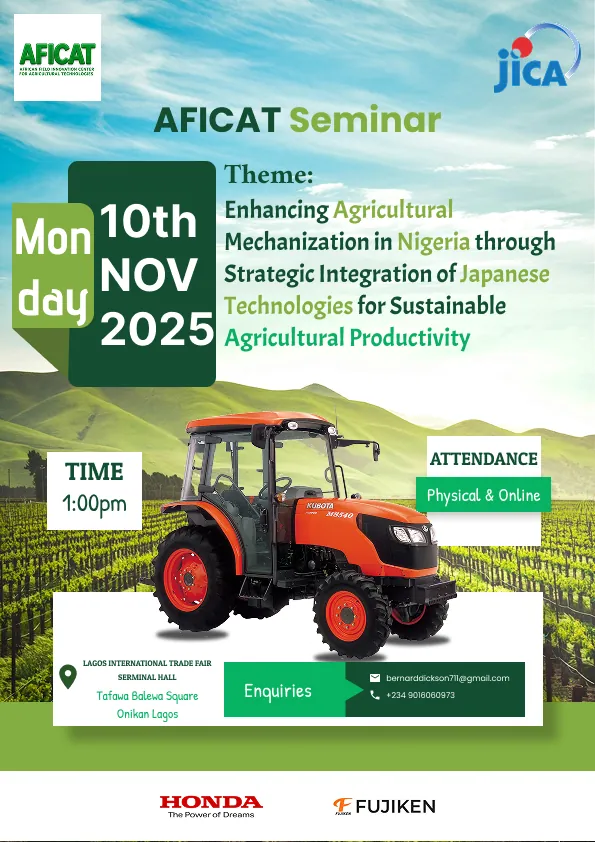
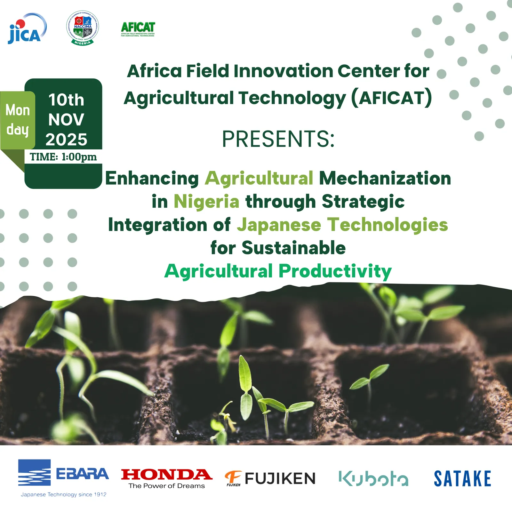
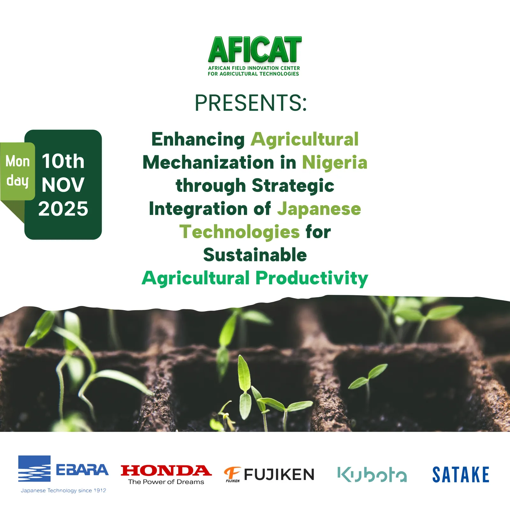
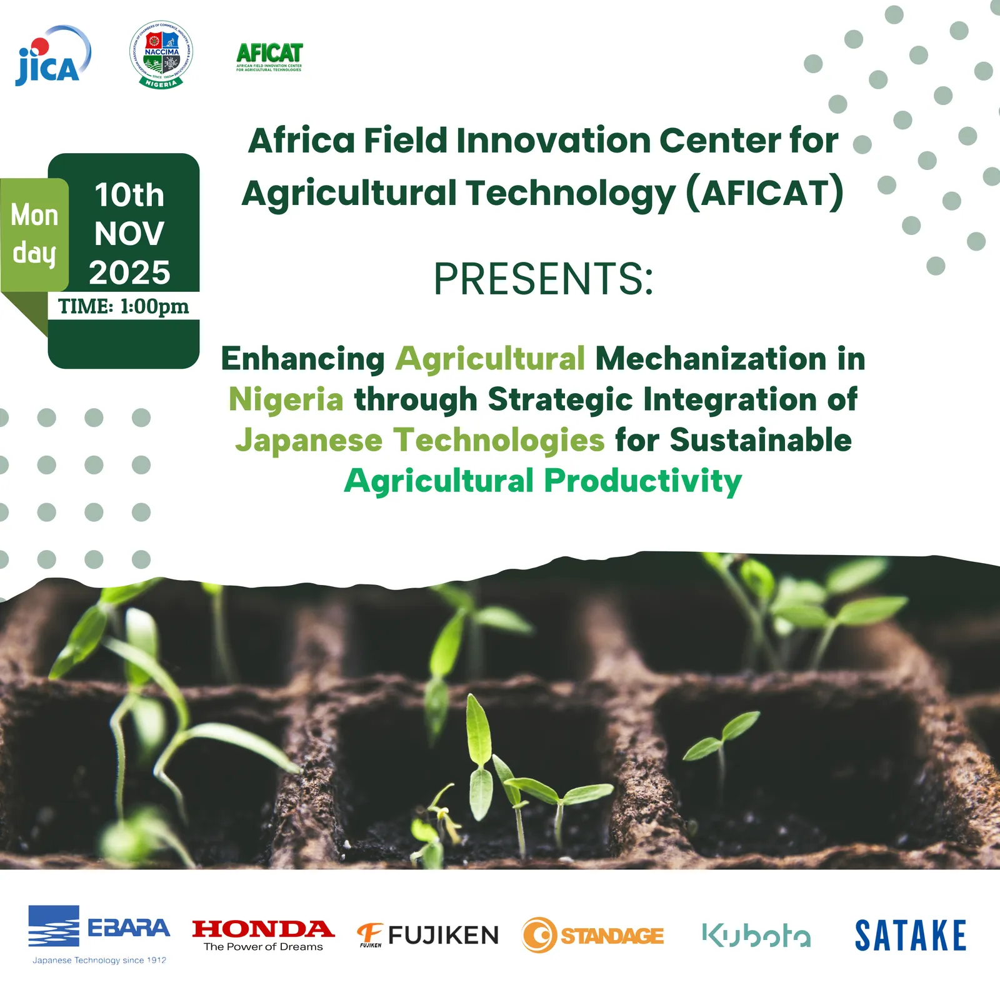

AFICAT seminar design
Flyer and stage backdrop for a seminar on agricultural mechanisation in Nigeria.

The challenge
The Africa Field Innovation Center for Agricultural Technology needed event materials that carried its brand and gave equal space to several partner organisations.
My approach
A clean layout built on the centre's green, with the seminar theme as the main message and partner logos in a consistent strip.
The solution
A printed flyer and a large-format backdrop for the seminar on 10 November 2025.


